| รหัสนิสิต | ชื่อ-นามสกุล |
|---|---|
| 6330300160 | นาย ชญานิน ตลับเงิน |
| 6730300591 | นาย ศุภวิชญ์ ไชยานุศักดิ์ |
| 6730300850 | นาย พัฒนเดช มะหิเมือง |
| ข้อกำหนด | สิ่งที่ทำ | หัวข้อ |
|---|---|---|
| 1. เลือก dataset และกำหนดเป้าหมาย | Seoul Bike Sharing Demand (UCI) · regression ทำนายยอดเช่าคัน/ชม. | 1, 2 |
| 1. EDA: สถิติเชิงพรรณนา, visualization, ความสัมพันธ์, outlier | describe(), 7 กราฟ, Pearson correlation, กฎ IQR — ทำบน train เท่านั้น | 4 |
| 2. จัดการ missing value | ความชื้น 0% (ค่าผิดของเซนเซอร์) → NaN → เติมด้วย median ใน Pipeline | 4.4, 5 |
| 2. จัดการ outlier | ตรวจด้วย IQR แล้วเก็บไว้ เพราะเป็นเหตุการณ์จริง | 4.4 |
| 2. Encoding | One-hot สำหรับฤดู เดือน วัน · ชั่วโมงเลือก encoding ตามชนิดโมเดล | 5 |
| 2. Feature scaling | StandardScaler (Z-score) พร้อมเหตุผลที่ไม่ใช้ Min-Max | 5 |
| 3. Filter method | f_regression (correlation) และ mutual_info_regression · อธิบายว่าทำไมใช้ chi² ไม่ได้ | 6 |
| 3. Wrapper method | RFE | 6 |
| 3. Embedded method | Lasso (L1) | 6 |
| 3. Feature extraction | PCA | 7 |
| 4. แบ่ง train/test 70–80 / 20–30 | 80 / 20 ตามวัน (292 / 73 วัน) + 5-fold GroupKFold บน train | 3 |
| 4. อัลกอริทึมอย่างน้อย 3–4 แบบ | Linear Regression, kNN, Random Forest, HistGradientBoosting + baseline 3 แบบ | 8, 9 |
| 4. เมตริก MAE, MSE, RMSE, R² | ครบทั้ง 4 ค่า ทั้งใน CV ของทุกโมเดล (ตารางที่ 8.1) และบน test (ตารางที่ 11.1) · MAE เป็นเมตริกหลัก | 1, 8, 11 |
| 4. วิเคราะห์ overfitting / underfitting | คอลัมน์ gap = CV MAE − MAE บน train (ตารางที่ 8.1) | 8 |
| 4. Model selection | เลือกด้วย CV MAE + ทรัพยากรที่ใช้ (ไม่ใช้ test) | 10 |
| ป้องกัน data leakage | split และ CV ตามวัน · ทุกขั้นที่เรียนจากข้อมูลอยู่ใน Pipeline · พิสูจน์ราย fold (ตารางที่ 5.3) | 3, 5, ภาคผนวก ก |
| 5. สรุปโมเดลที่ดีที่สุดและประสิทธิภาพ | HistGradientBoosting · ผล test และ error analysis | 10, 11, 15 |
| 5. ทำนายข้อมูลใหม่ | Pipeline ที่ใช้งานจริง + 4 สถานการณ์สมมติ พร้อมแปลความหมาย | 12 |
| ความท้าทายที่พบ | ตารางปัญหาและวิธีแก้ | 13 |
| สิ่งที่ส่ง: รายงาน · โค้ด · สไลด์ | รายงานนี้ (reports/report.pdf) · notebook 00_setup, 01_eda, 02_modeling พร้อมคำอธิบายทุก cell · สไลด์นำเสนอ 18 หน้า (slides/seoul-bike-presentation.html) และบทพูด (slides/speaker-script.html) | ภาคผนวก ข |
โครงงานนี้สร้างโมเดล regression ทำนาย จำนวนจักรยานที่ถูกเช่าในแต่ละชั่วโมง ของระบบ Seoul Bike ทั้งเมือง จากข้อมูลที่รู้ล่วงหน้าได้ คือพยากรณ์อากาศและปฏิทิน โดยใช้ชุดข้อมูล Seoul Bike Sharing Demand จาก UCI (8,760 ชั่วโมง ธ.ค. 2017 – พ.ย. 2018)
ข้อมูลถูกแบ่ง train/test ตามวัน เพื่อไม่ให้ชั่วโมงของวันเดียวกันรั่วข้ามสองฝั่ง และทุกการตัดสินใจใช้ 5-fold GroupKFold บน train เท่านั้น
เราเทียบ 4 ตระกูลโมเดล (Linear Regression, kNN, Random Forest, HistGradientBoosting) กับ baseline 3 แบบ พร้อมทำ feature selection 3 แนวทางและ PCA
โมเดลที่เลือกคือ HistGradientBoostingRegressor ได้ CV MAE 109.0 ± 8.1 คัน/ชม. และเมื่อประเมินชุดทดสอบครั้งเดียวได้ MAE 97.4 คัน/ชม., MSE 28,947.7 (RMSE 170.1 คัน/ชม.) และ R² 0.919
จุดอ่อนหลักคือชั่วโมงที่ฝนตกและเหตุการณ์พิเศษที่ไม่มีใน feature เช่น พายุไต้ฝุ่นและเทศกาล
ระบบเช่าจักรยานสาธารณะในเมืองใหญ่ต้องมีจักรยานพร้อมให้เช่าในชั่วโมงที่คนต้องการ ถ้าจักรยานไม่พอ คนจะเช่าไม่ได้ ถ้าเตรียมไว้มากเกินไปก็เสียแรงขนย้ายโดยไม่จำเป็น การรู้ล่วงหน้าว่าแต่ละชั่วโมงจะมีคนเช่ากี่คันจึงช่วยให้ผู้ให้บริการวางแผนได้ โครงงานนี้ใช้ข้อมูลของระบบ Seoul Bike กรุงโซล ซึ่งบันทึกยอดเช่ารายชั่วโมงคู่กับสภาพอากาศ มาสร้างโมเดลที่ทำนายยอดเช่าจากข้อมูลที่รู้ล่วงหน้าได้ คือพยากรณ์อากาศและปฏิทิน และทำตามขั้นตอนของโจทย์ครบ ตั้งแต่การสำรวจข้อมูล การเตรียมข้อมูล การคัดเลือกและสกัด feature การสร้างและเทียบ 4 อัลกอริทึม การเลือกโมเดล ไปจนถึงการทำนายข้อมูลใหม่
| หัวข้อ | รายละเอียด |
|---|---|
| ชนิดงาน | Regression |
| ทำนายอะไร | จำนวนจักรยานที่ถูกเช่าในชั่วโมงนั้น (rented_bike_count, คัน/ชั่วโมง) ของทั้งระบบ |
| ใช้ทำอะไร | ให้ผู้ให้บริการวางแผนจำนวนจักรยานที่ต้องพร้อมใช้ และจัดคนกระจายจักรยานล่วงหน้าในชั่วโมงที่คาดว่ามีคนเช่ามาก |
| input | สภาพอากาศ (อุณหภูมิ, ความชื้น, ลม, ทัศนวิสัย, dew point, แสงแดด, ฝน, หิมะ) + เวลา (ชั่วโมง, วันในสัปดาห์, เดือน) + ฤดู + วันหยุด |
| เมตริกหลัก | MAE (คัน/ชม.) — ตีความตรงว่า "ทายคลาดเฉลี่ยกี่คัน" และไม่ถูกชั่วโมงพีคไม่กี่ชั่วโมงครอบงำเหมือน RMSE (target เบ้ขวา: mean 756.8 > median 582.5) |
| เมตริกรอง | MSE และ RMSE (ดูว่ามี error ก้อนใหญ่ไหม) และ R² (สัดส่วนความแปรปรวนที่อธิบายได้) · รายงาน MSE ตามเกณฑ์ แต่อธิบายผลด้วย RMSE เพราะ MSE = RMSE² มีหน่วยเป็น "คัน²" ซึ่งตีความไม่ได้โดยตรง |
ขอบเขต: ทำนายเฉพาะชั่วโมงที่ระบบเปิดให้บริการ (Functioning Day = Yes) · ระดับทั้งเมือง ไม่ใช่รายสถานี · ไม่ใช้ยอดเช่าของชั่วโมงก่อนหน้า (lag) เพราะเป็นการใช้ target ทำนาย target · โจทย์คือ "อากาศ + เวลาแบบนี้ → จะมีคนเช่ากี่คัน" ไม่ใช่การพยากรณ์อนุกรมเวลา
ทำไมเลือก regression: target ของชุดข้อมูลเป็นจำนวนนับต่อเนื่อง ทำนายได้ตรงๆ โดยไม่ต้องตั้ง threshold เอง และตัวเลข "กี่คัน" นำไปวางแผนได้ทันที
วิธีดำเนินการ
เลือกชุดข้อมูล Seoul Bike Sharing Demand (UCI Machine Learning Repository, id 560, สัญญาอนุญาต CC BY 4.0) ซึ่งบันทึกยอดเช่ารายชั่วโมงของระบบจักรยานสาธารณะกรุงโซล ตั้งแต่ 1 ธ.ค. 2017 ถึง 30 พ.ย. 2018 จากนั้นตรวจ byte ดิบของไฟล์เพื่อเลือก encoding ตรวจรูปแบบวันที่ เปลี่ยนชื่อคอลัมน์เป็น snake_case แล้วตรวจความครบถ้วน แถวซ้ำ และค่าที่เป็นไปได้ของคอลัมน์หมวดหมู่
ผลลัพธ์
| คอลัมน์ดิบ | ชื่อที่ใช้ | ชนิด / หน่วย |
|---|---|---|
| Date | date | วันที่ (dd/mm/yyyy) — ใช้เป็น group ของการ split ไม่ใช่ feature |
| Rented Bike Count | rented_bike_count | target · คัน/ชั่วโมง |
| Hour | hour | 0–23 |
| Temperature(°C) | temp_c | °C |
| Humidity(%) | humidity_pct | % |
| Wind speed (m/s) | wind_speed_ms | m/s |
| Visibility (10m) | visibility_10m | หน่วย 10 เมตร (27–2,000) |
| Dew point temperature(°C) | dew_point_c | °C |
| Solar Radiation (MJ/m2) | solar_radiation_mj | MJ/m² |
| Rainfall(mm) | rainfall_mm | มม. |
| Snowfall (cm) | snowfall_cm | ซม. |
| Seasons | seasons | Winter / Spring / Summer / Autumn |
| Holiday | holiday | Holiday / No Holiday |
| Functioning Day | functioning_day | Yes / No (ระบบเปิด/ปิด) |
ไฟล์ไม่ใช่ UTF-8 (สัญลักษณ์ ° เก็บเป็น byte 0xB0) จึงอ่านด้วย cp1252 และระบุรูปแบบวันที่ %d/%m/%Y เอง (ตรวจจากค่าส่วนแรกที่ขึ้นถึง 31) ได้ 8,760 แถว × 14 คอลัมน์ ครบ 365 วัน × 24 ชั่วโมง ไม่มี missing value และไม่มีแถวซ้ำ
การวิเคราะห์และการตัดสินใจ
date ไม่ใช้เป็น feature โดยตรง แต่ใช้เป็นกลุ่มของการแบ่งข้อมูล (หัวข้อ 3) และใช้สร้าง feature ปฏิทิน (หัวข้อ 5)วิธีดำเนินการ
ชั่วโมงติดกันในวันเดียวกันมีอากาศและยอดเช่าใกล้กันมาก ถ้าสุ่มแบ่งทีละแถว ชั่วโมง 14:00 อาจอยู่ใน train ส่วน 15:00 อยู่ใน test โมเดลจะแค่ "จำวันนั้น" ได้ ทำให้คะแนนสูงเกินจริง จึงใช้ วันที่เป็นกลุ่ม (group) ให้ทั้ง 24 ชั่วโมงของวันหนึ่งอยู่ฝั่งเดียวกันเสมอ โดยแบ่งด้วย GroupShuffleSplit เป็น train 80% / test 20% ของจำนวนวัน ก่อน ทำ EDA และบันทึกรายการวันเป็นไฟล์ จากนั้นทุกขั้นที่ต้องประเมินโมเดลบน train ใช้ 5-fold GroupKFold
ผลลัพธ์
| วัน | แถว | ชั่วโมงที่ระบบปิด | วันหยุดนักขัตฤกษ์ | สัดส่วนฤดูหนาว | |
|---|---|---|---|---|---|
| train | 292 | 7,008 | 240 | 12 | 22.9% |
| test | 73 | 1,752 | 55 | 6 | 31.5% |
เมื่อทดลองกับ KFold แบบสุ่มแถว validation fold มีแถวจาก 281 วัน และ ทุกวันมีชั่วโมงอื่นของวันเดียวกันอยู่ใน train ส่วน GroupKFold มีวันซ้ำระหว่าง train กับ validation 0 วันในทุก fold
การวิเคราะห์และการตัดสินใจ
data/splits/train_dates.csv, test_dates.csv และ commit ไว้ ทุก notebook ใช้วัน test ชุดเดียวกันGroupKFold และส่ง groups = วันที่ทุกครั้งวิธีดำเนินการ
สำรวจเฉพาะ train (7,008 แถว, 292 วัน) เพื่อไม่ให้ข้อมูล test มีผลต่อการตัดสินใจใดๆ โดยใช้สถิติเชิงพรรณนา (describe(), skewness), กราฟ (histogram, boxplot, line plot รายชั่วโมง, กราฟตามฤดู อุณหภูมิ และฝน), Pearson correlation และกฎ IQR สำหรับค่าผิดปกติ ทุกหัวข้อจบด้วยการตัดสินใจที่ส่งต่อไปยังขั้นเตรียมข้อมูล (หัวข้อ 5)
ผลลัพธ์
| ตัวแปร | mean | std | min | Q1 | median | Q3 | max |
|---|---|---|---|---|---|---|---|
rented_bike_count | 730.86 | 653.78 | 0 | 206 | 547 | 1,101 | 3,556 |
temp_c | 13.46 | 11.72 | −16.2 | 4.10 | 14.80 | 22.80 | 39.4 |
humidity_pct | 58.56 | 20.35 | 0 | 43 | 58 | 74.25 | 98 |
wind_speed_ms | 1.70 | 1.02 | 0 | 0.90 | 1.50 | 2.30 | 7.4 |
visibility_10m | 1,430.96 | 601.10 | 27 | 943.75 | 1,662 | 1,998 | 2,000 |
dew_point_c | 4.71 | 12.85 | −30.6 | −4.20 | 5.95 | 15.40 | 27.2 |
solar_radiation_mj | 0.58 | 0.88 | 0 | 0 | 0.01 | 0.95 | 3.52 |
rainfall_mm | 0.15 | 1.16 | 0 | 0 | 0 | 0 | 35.0 |
snowfall_cm | 0.07 | 0.45 | 0 | 0 | 0 | 0 | 8.8 |
visibility_10m มีสเกลใหญ่กว่าตัวแปรอื่นมาก · ฝน หิมะ และแสงแดดส่วนใหญ่เป็น 0 (zero-inflated) · ความชื้นต่ำสุด 0% ซึ่งเป็นไปไม่ได้ทางกายภาพ (ตรวจต่อในหัวข้อ 4.4)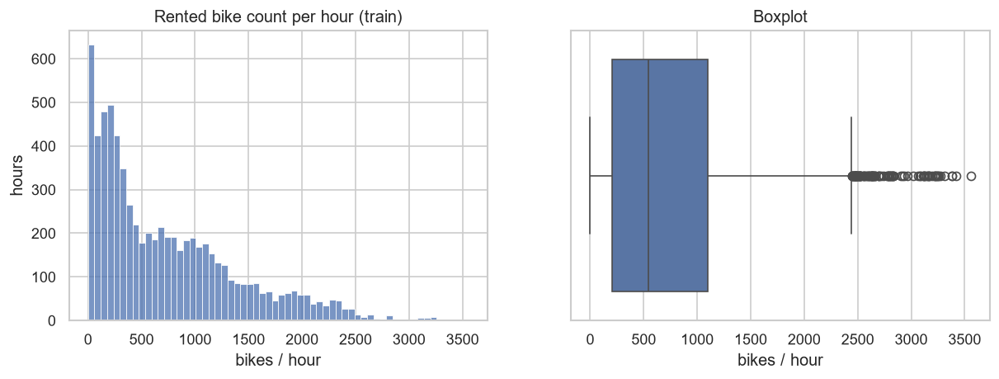
histogram เบ้ขวาชัดเจน (skewness 1.08) แท่งแรกใกล้ 0 สูงที่สุด ส่วนหนึ่งมาจาก 240 แถว (3.4%) ที่ยอดเป็น 0 พอดี และ boxplot มีจุดเกินหนวดขวา (> 2,443.5 คัน) 102 แถว
ใน train มี 240 แถวที่ functioning_day = No (ระบบปิดทั้งวัน 10 วัน) ยอดเช่าเป็น 0 ทุกแถว และแถวที่ยอดเป็น 0 ทั้งหมดคือแถวเหล่านี้ หลังตัดออกเหลือ 6,768 แถว (282 วัน) ยอดต่ำสุด 2 คัน mean 756.8 median 582.5 skewness 1.07 (เบ้ขวา)
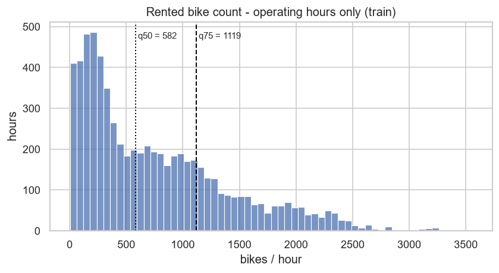
การวิเคราะห์และการตัดสินใจ
log1p(y) กับโมเดลเชิงเส้นในขั้น tuningผลลัพธ์
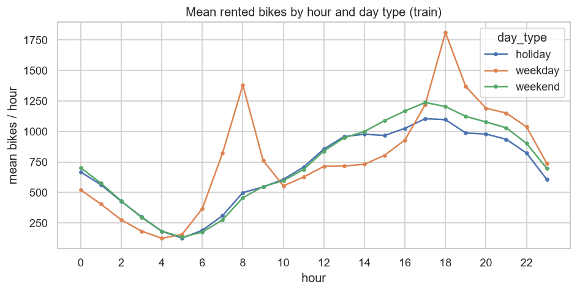
วันทำงานมีพีคแหลม 2 ครั้งที่ 8:00 (~1,380 คัน) และ 18:00 (~1,810 คัน) ซึ่งเป็นการเดินทางไป-กลับที่ทำงาน ส่วนเสาร์-อาทิตย์และวันหยุดนักขัตฤกษ์มีรูปร่างเดียวกัน คือไม่มีพีคเช้าและสูงสุดราว 17:00 ทุกประเภทวันต่ำสุดตอน 4:00–5:00
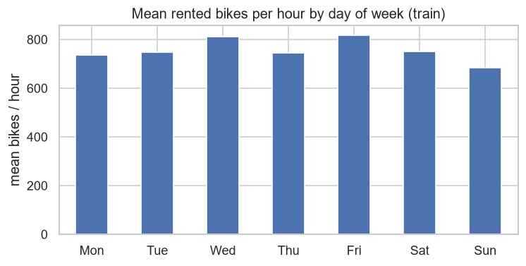
เมื่อเฉลี่ยทั้งวัน แต่ละวันในสัปดาห์ต่างกันไม่มาก (~680–820 คัน/ชม.) อาทิตย์ต่ำสุด (682) พุธและศุกร์สูงสุด (811, 816)
การวิเคราะห์และการตัดสินใจ
hour_sin, hour_cosis_weekend, is_holiday · โมเดลเชิงเส้นจับ interaction เองไม่ได้ ส่วนโมเดลต้นไม้จับได้ จึงคาดว่าโมเดลต้นไม้จะได้เปรียบday_of_week และ is_weekend แล้วให้ feature selection ตัดสินว่าตัวไหนมีประโยชน์ผลลัพธ์
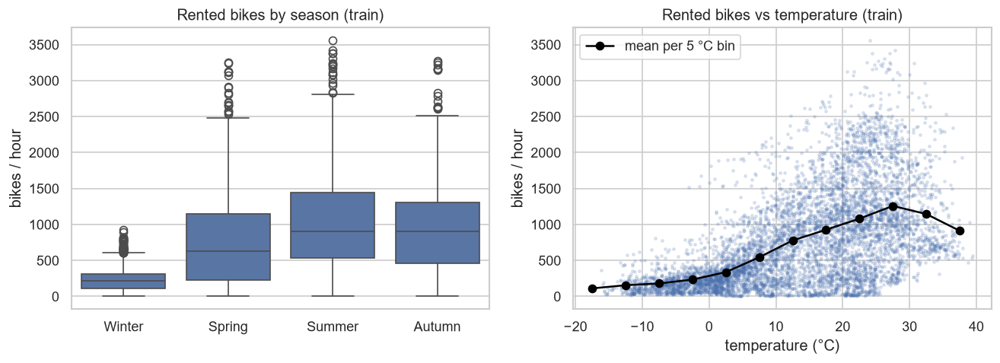
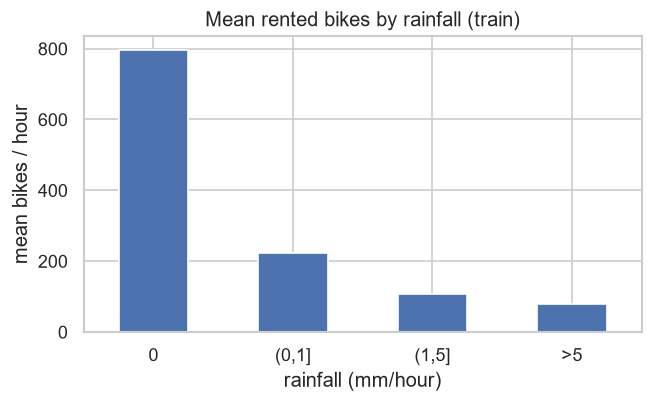
การวิเคราะห์และการตัดสินใจ
is_raining · ฝนเป็นเหตุการณ์ที่มีน้อย (~6%) จึงคาดว่าจะเป็นจุดที่โมเดลทายยากseasons และสร้าง month ที่ละเอียดกว่า แล้วให้ขั้น feature selection ตัดสินว่าซ้ำซ้อนหรือไม่ผลลัพธ์
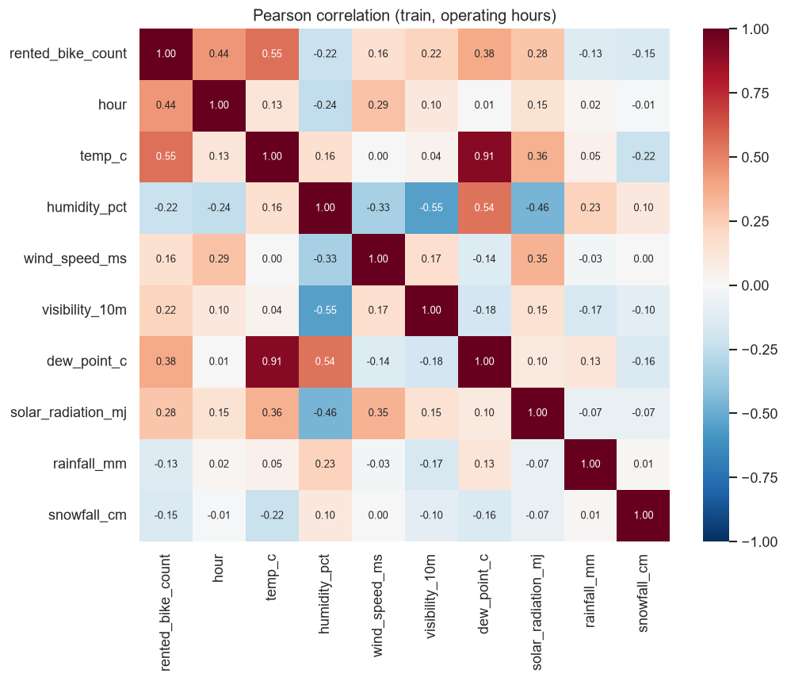
temp_c กับ dew_point_c (r = 0.91) · กับ target: temp_c r = 0.55, hour r = 0.44 · ฝน/หิมะมี r ต่ำ (−0.13, −0.15) ทั้งที่หัวข้อ 4.3 แสดงว่ามีผลแรง · คู่ที่สัมพันธ์ปานกลาง เช่น ความชื้นกับทัศนวิสัย (−0.55) และความชื้นกับ dew point (0.54)solar_radiation_mj (~7%), wind_speed_ms (~1.6%) และยอดเช่า (~1.4%) ซึ่งล้วนอยู่ในช่วงที่เกิดขึ้นได้จริงการวิเคราะห์และการตัดสินใจ
is_raining · ยังไม่ตัด dew_point_c แต่ให้ feature selection ตัดสิน และความซ้ำซ้อนของตัวแปรอากาศเป็นเหตุผลที่ลอง PCAวิธีดำเนินการ
functioning_day = No และแปลง humidity_pct = 0 เป็น NaNPipeline เพื่อให้ CV fit ใหม่ทุก fold — ตัวแปรตัวเลขและ binary ผ่าน SimpleImputer(median) → StandardScaler ส่วน seasons, month, day_of_week ผ่าน OneHotEncoder ตามด้วยช่อง select (สำหรับ selector/PCA) และช่อง model| feature | สร้างจาก | เหตุผล (จาก EDA) |
|---|---|---|
hour_sin, hour_cos | sin/cos(2π·hour/24) | ชั่วโมงเป็นวงรอบ: 23:00 กับ 0:00 ห่างกัน 0.261 บนวงกลม เท่ากับ 0:00–1:00 (ตัวเลขดิบห่าง 23) |
is_weekend, day_of_week | date | รูปร่างรายชั่วโมงของวันหยุดต่างจากวันทำงาน |
is_holiday | holiday | แปลงข้อความเป็น 0/1 |
month | date | ละเอียดกว่าฤดู (ต้น/ปลาย Spring ต่างกันมาก) |
is_raining | rainfall_mm > 0 | "มีฝน" ลดยอด ~80% ไม่ว่าจะตกมากหรือน้อย |
ผลลัพธ์
temp_c 13.35–13.40, median ความชื้น 57–58 ต่างกันเล็กน้อยในแต่ละ fold)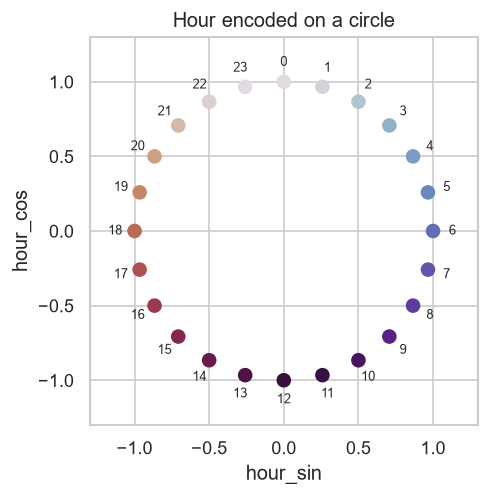
| โมเดล | encoding | คอลัมน์หลัง preprocess | เหตุผล |
|---|---|---|---|
| Linear Regression | one-hot 24 คอลัมน์ | 58 | ให้แต่ละชั่วโมงมีค่าคงที่ของตัวเอง รองรับ 2 พีค |
| kNN | sin/cos | 36 | ใช้ระยะทาง ต้องการให้ 23:00 ใกล้ 0:00 และมิติน้อย |
| Random Forest, HistGradientBoosting | 0–23 ตรงๆ | 35 | ต้นไม้ตัดแบ่งช่วงชั่วโมงได้เองหลายครั้ง |
การวิเคราะห์และการตัดสินใจ
seasons, month, day_of_week เพราะเป็นหมวดหมู่ที่ไม่มีลำดับ ถ้าใช้ label encoding (เช่น Winter = 3, Autumn = 0) โมเดลเชิงเส้นและ kNN จะตีความว่าเป็นระยะทางหรือขนาดที่ไม่มีอยู่จริงvisibility_10m 27–2,000 เทียบกับ wind_speed_ms 0–7.4 ส่วนโมเดลต้นไม้ไม่ได้รับผลจาก scaling แต่ใช้ Pipeline เดียวกันเพื่อให้เทียบกันได้rainfall_mm ที่ max 35 มม. แต่ Q3 = 0 ค่าฝนเกือบทั้งหมดจะถูกบีบไปกองใกล้ 0 และค่าใน test ที่เกินช่วงของ train จะหลุดนอกช่วง [0, 1] ขณะที่ Z-score ใช้ mean และ std ซึ่งได้รับผลจากค่าสุดโต่งน้อยกว่า และให้ทุกตัวแปรมี mean 0 เหมาะกับ PCA และ penalty ของ Lasso/Ridge (ข้อนี้เป็นเหตุผลเชิงหลักการ ไม่ได้ทดลองเทียบกันด้วย CV)วิธีดำเนินการ
ทำ 3 แนวทาง โดย selector อยู่ในช่อง select ของ Pipeline และเลือกจำนวน feature ด้วย GridSearchCV + GroupKFold · ประเมินด้วย Linear Regression (hour one-hot, 58 คอลัมน์) เพราะ feature selection มีผลกับโมเดลเชิงเส้นมากที่สุด
หมายเหตุ: ใช้ chi² ไม่ได้ เพราะ chi² ต้องการ target เป็นหมวดหมู่ (และต้องการค่า feature ไม่ติดลบ ขณะที่อุณหภูมิติดลบได้) จึงใช้ f_regression และ mutual_info_regression แทน
ผลลัพธ์
| วิธี | แนวทาง | พารามิเตอร์ที่ดีที่สุด | จำนวน feature | CV MAE |
|---|---|---|---|---|
| ไม่เลือก (ทุก feature) | — | — | 58 | 266.2 |
| SelectKBest(f_regression) | Filter | k = 58 | 58 | 266.2 |
| SelectKBest(mutual_info) | Filter | k = 58 | 58 | 266.2 |
| RFE (จัดอันดับด้วย Ridge) | Wrapper | n = 30 | 30 | 265.8 |
| SelectFromModel(Lasso) | Embedded | alpha = 0.1 | 52 | 266.2 |
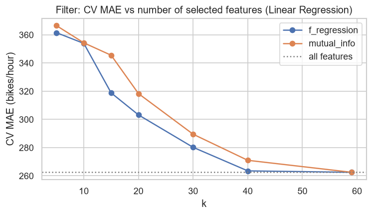
การวิเคราะห์และการตัดสินใจ
temp_c เป็นอันดับ 1 และ mutual information จับผลของฝน (is_raining, rainfall_mm) ได้ดีกว่า F-testis_weekend/is_holiday กับ one-hot ของวัน, เดือนกับฤดู และ rainfall_mm (เก็บ is_raining)seasons_Summer, month_7) และให้ coefficient ใหญ่สุดกับชั่วโมงพีค (hour_18 +837 คัน) · ต่างจากที่คาดไว้ Lasso ไม่ได้ตัด dew_point_c ทั้งที่ r กับ temp_c สูงตัดสินใจ: ไม่มีวิธีไหนทำให้ MAE ดีขึ้นเกินระดับ noise จึงใช้ทุก feature ในโมเดลสุดท้าย และใช้ผลขั้นนี้อธิบายความสำคัญและความซ้ำซ้อนของ feature
วิธีดำเนินการ
ทำ PCA บนข้อมูลหลัง standardize (36 คอลัมน์, hour แบบ sin/cos) เพื่อดูว่าบีบมิติได้แค่ไหน ตีความ component แรกๆ จาก loading แล้วใส่ PCA ในช่อง select ของ Pipeline เทียบ CV MAE กับการไม่ใส่ ทั้งใน Linear Regression และ kNN
ผลลัพธ์
ต้องใช้ 14 components จึงอธิบาย variance ได้ ≥ 90% และ 19 components สำหรับ ≥ 95% → ข้อมูลซ้ำซ้อนพอสมควรแต่บีบมิติได้ไม่มาก
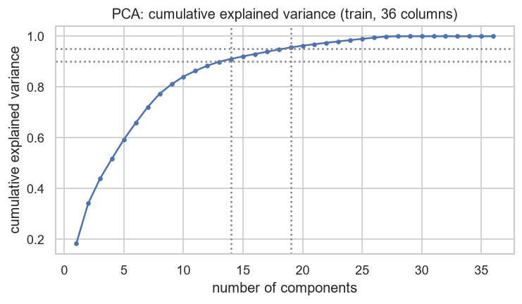
| PC | variance | loading หลัก | ตีความ |
|---|---|---|---|
| PC1 | 18.5% | humidity +0.53, dew point +0.39, visibility −0.32, is_raining +0.31 | ความชื้น / อากาศมัว |
| PC2 | 15.8% | temp +0.56, dew point +0.45, solar +0.44, hour_cos −0.30 | ความอุ่น / กลางวัน |
| PC3 | 9.7% | rainfall +0.51, is_raining +0.49, hour_cos −0.36 | ฝน |
| โมเดล | ไม่มี PCA | 5 PC | 10 PC | 15 PC | 20 PC | 25 PC |
|---|---|---|---|---|---|---|
| Linear Regression | 314.6 | 364.9 | 340.2 | 325.6 | 329.2 | 315.6 |
| kNN (k = 10) | 194.4 | 200.8 | 190.5 | 189.5 | 201.3 | 195.0 |
การวิเคราะห์และการตัดสินใจ
PCA ไม่ช่วย Linear Regression (ตัดข้อมูลบางส่วนทิ้ง ส่วนโมเดลเชิงเส้นบนแกนที่หมุนแล้วก็ยังเป็นเชิงเส้นเหมือนเดิม) และ ช่วย kNN เล็กน้อย (~5 คัน) เพราะการตัดมิติที่เป็น noise ทำให้ "เพื่อนบ้าน" มีความหมายขึ้น → ใช้ PCA(15) เป็นตัวเลือกหนึ่งใน tuning ของ kNN
วิธีดำเนินการ
สร้าง baseline 3 แบบเป็นเพดานล่าง (ทายค่าเฉลี่ย, ทายมัธยฐาน และค่าเฉลี่ยของแต่ละชั่วโมง × ประเภทวัน) แล้วเทียบ 4 ตระกูลโมเดลที่มีสมมติฐานต่างกัน — เส้นตรง (Linear Regression), ระยะทาง (kNN), ต้นไม้แบบ bagging (Random Forest) และต้นไม้แบบ boosting (HistGradientBoosting) — ด้วยค่า default ภายใต้ 5-fold GroupKFold บน train และบันทึก MAE บน train คู่กันเพื่อดู overfit/underfit (gap = CV MAE − train MAE)
ผลลัพธ์
| โมเดล | CV MAE | ± std | MSE | RMSE | R² | MAE บน train | gap |
|---|---|---|---|---|---|---|---|
| Dummy (mean) | 527.5 | 12.9 | 423,381 | 650.4 | −0.003 | 527.1 | — |
| Dummy (median) | 512.2 | 16.6 | 454,336 | 673.6 | −0.075 | 511.8 | — |
| เวลาอย่างเดียว (hour × ประเภทวัน) | 401.0 | 10.5 | 270,794 | 520.2 | 0.358 | 396.0 | — |
| Linear Regression (hour one-hot) | 266.2 | 4.8 | 120,964 | 347.7 | 0.713 | 259.8 | 6.4 |
| kNN (k = 10, sin/cos) | 194.4 | 8.6 | 84,316 | 289.9 | 0.800 | 151.9 | 42.5 |
| Random Forest (200 ต้น) | 122.4 | 9.4 | 40,192 | 199.4 | 0.904 | 36.8 | 85.6 |
| HistGradientBoosting | 114.1 | 10.0 | 34,462 | 184.6 | 0.918 | 69.0 | 45.1 |
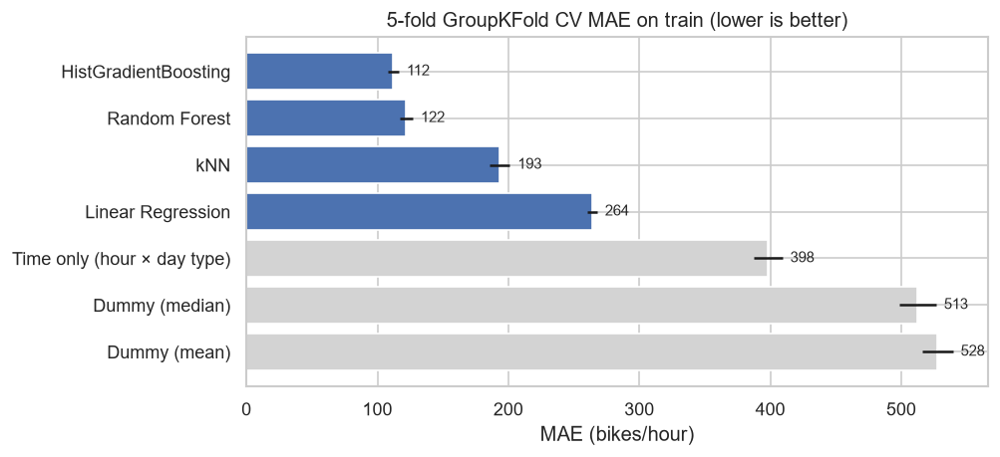
การวิเคราะห์และการตัดสินใจ
วิธีดำเนินการ
tune ด้วย GridSearchCV (Linear, kNN) และ RandomizedSearchCV (RF สุ่ม 15 จาก 64 ชุด, HGB สุ่ม 30 จาก 480 ชุด) ทั้งหมดใช้ GroupKFold + groups และเลือกด้วย MAE · ลองฝึกบน log1p(y) ผ่าน TransformedTargetRegressor ด้วย (แปลงค่าทำนายกลับก่อนคิดคะแนน MAE จึงยังเป็นหน่วยคัน)
ผลลัพธ์
| โมเดล | ก่อน | หลัง | พารามิเตอร์ที่ได้ |
|---|---|---|---|
| Linear Regression | 266.2 | 266.2 | ไม่มีไฮเปอร์พารามิเตอร์ |
| Linear Regression + log1p(y) | — | 211.0 ± 6.9 | ดีขึ้น 55 คัน (−21%) |
| kNN | 194.4 | 183.7 ± 7.8 | k = 5, weights = distance, PCA(15) |
| kNN + log1p(y) | — | 188.7 ± 9.3 | k = 15, distance |
| Random Forest | 122.4 | 121.8 ± 9.1 | 200 ต้น, min_samples_leaf = 1, max_features = 0.75 |
| HistGradientBoosting | 114.1 | 109.0 ± 8.1 | learning_rate = 0.02, max_iter = 400, max_leaf_nodes = 127, min_samples_leaf = 5, l2 = 1.0 |
| HistGradientBoosting + log1p(y) | — | 110.7 ± 8.0 | พารามิเตอร์เดียวกับ HGB |
การวิเคราะห์และการตัดสินใจ
วิธีดำเนินการ
นำตัวที่ดีที่สุดของแต่ละตระกูลหลัง tune มาเทียบกันทั้งความแม่น (CV MAE) และทรัพยากร (เวลา fit บน train ทั้งหมด, เวลาทำนาย 1 แถว) โดยเลือกด้วย CV ไม่ใช้ test เพื่อให้ test เป็นการประเมินที่ไม่ลำเอียงจริง
ผลลัพธ์
| โมเดล | CV MAE | fit ทั้ง train (s) | latency / 1 แถว (ms) | ต้นทุนการทำนาย |
|---|---|---|---|---|
| HistGradientBoosting | 109.0 ± 8.1 | 5.26 | 14.1 | O(จำนวนต้น × ความลึก) |
| Random Forest | 121.8 ± 9.1 | 3.77 | 11.7 | O(จำนวนต้น × ความลึก) |
| kNN (+PCA 15) | 183.7 ± 7.8 | 0.03 | 3.9 | O(n·d) ต่อครั้ง ต้องเก็บ train ทั้งหมด |
| Linear Regression + log1p(y) | 211.0 ± 6.9 | 0.04 | 4.7 | O(d) |
เวลา fit และ latency เปลี่ยนเล็กน้อยทุกครั้งที่รันและขึ้นกับเครื่อง ใช้ดูลำดับขนาดเท่านั้น (latency = มัธยฐานของการทำนาย 1 แถว 30 ครั้ง รวม preprocessing ใน Pipeline)
การวิเคราะห์และการตัดสินใจ
เลือก HistGradientBoosting: MAE ต่ำที่สุด ห่างจาก Random Forest 12.8 คัน (~1.5 เท่าของ std จึงไม่ถือว่าเสมอกัน) และทำนาย 1 แถวใช้ไม่กี่มิลลิวินาที · ทรัพยากรไม่ใช่ตัวตัดสิน เพราะทุกโมเดล fit ได้ในไม่กี่วินาทีและทำนายในระดับมิลลิวินาที ใช้งานจริงได้ทั้งหมด · Random Forest ตกไปเพราะแม่นน้อยกว่า
วิธีดำเนินการ
นำ HistGradientBoosting ที่ fit บน train ทั้งหมดมาทำนาย test 1,697 แถว เป็นครั้งแรกและครั้งเดียว (ค่าทำนายติดลบ 3 แถว clip เป็น 0) แล้ววิเคราะห์ error แยกตามฤดู ประเภทวัน ฝน และชั่วโมง พร้อมดู 10 ชั่วโมงที่ทายพลาดมากที่สุด
ผลลัพธ์
| เมตริก | CV บน train | test |
|---|---|---|
| MAE (คัน/ชม.) | 109.0 | 97.4 |
| MSE (คัน²) | — | 28,947.7 |
| RMSE (คัน/ชม.) | — | 170.1 |
| R² | — | 0.919 |
| กลุ่ม | n | ยอดเฉลี่ย | MAE | bias | MAE / ยอดเฉลี่ย |
|---|---|---|---|---|---|
| Winter | 552 | 211.7 | 49.7 | +5.5 | 23.5% |
| Spring | 336 | 596.0 | 97.0 | +30.3 | 16.3% |
| Autumn | 425 | 805.5 | 126.4 | +49.7 | 15.7% |
| Summer | 384 | 1,018.1 | 134.3 | +20.6 | 13.2% |
| วันทำงาน | 1,128 | 681.3 | 102.6 | +18.6 | 15.1% |
| วันหยุด | 569 | 495.4 | 87.2 | +37.4 | 17.6% |
| ฝนตก | 103 | 180.2 | 159.8 | +71.2 | 88.7% |
| ไม่มีฝน | 1,594 | 647.3 | 93.4 | +21.9 | 14.4% |
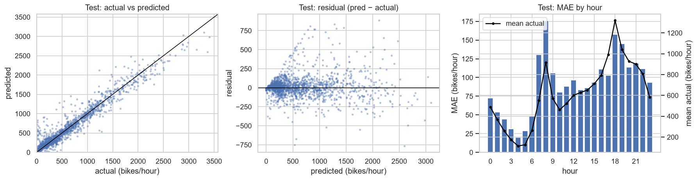
การวิเคราะห์และการตัดสินใจ
วิธีดำเนินการ
สร้างสถานการณ์สมมติในรูปแบบเดียวกับข้อมูลดิบ ผ่านฟังก์ชันสร้าง feature ชุดเดียวกับ train (dew point คำนวณจากอุณหภูมิและความชื้นให้สอดคล้องกันทางกายภาพ) แล้วทำนายด้วยโมเดลที่เลือก
Pipeline ที่ใช้ทำนายจริง: ข้อมูลดิบ 1 แถว (วันที่ ชั่วโมง อากาศ ฤดู วันหยุด) ของชั่วโมงที่ระบบเปิด → add_features() ฟังก์ชันเดียวกับตอนฝึก ได้ 17 คอลัมน์ (FEATURES) → final_model ซึ่งรวม SimpleImputer(median) → StandardScaler สำหรับตัวแปรตัวเลข และ OneHotEncoder สำหรับฤดู เดือน วันในสัปดาห์ ไว้หน้า HistGradientBoostingRegressor → ตัดค่าทำนายที่ติดลบเป็น 0 · ค่าที่ใช้แปลงทุกตัว (median, mean/std, หมวดหมู่) เรียนจาก train เท่านั้นและติดมากับ final_model ตอนทำนายจึงไม่ต้อง fit อะไรใหม่
ผลลัพธ์
| สถานการณ์ | ทำนาย (คัน/ชม.) | ความหมาย |
|---|---|---|
| พุธ 18:00 ฤดูร้อน 24 °C ไม่มีฝน | 2,981 | พีคเย็นวันทำงาน + อากาศดี = ต้องเตรียมจักรยานมากที่สุด |
| พุธ 18:00 เดียวกัน แต่ฝนตก 3 มม. (20 °C, ชื้น 95%) | 204 | ฝนทำให้ยอดหายไป ~93% |
| เสาร์ 18:00 อากาศเหมือนแถวแรก | 2,167 | วันหยุดไม่มีพีคเดินทางกลับบ้าน ต่ำกว่าวันพุธ ~800 คัน |
| พุธ 08:00 ฤดูหนาว −3 °C | 690 | ยังมีพีคเช้า แต่ต่ำกว่าฤดูร้อนมาก |
การวิเคราะห์และการตัดสินใจ
ทิศทางของทุกปัจจัยสมเหตุสมผลและตรงกับ EDA แต่ค่าทำนายของชั่วโมงฝนตกมีความไม่แน่นอนสูงที่สุด (หัวข้อ 11)
| ปัญหา | วิธีแก้ |
|---|---|
| ชั่วโมงในวันเดียวกันคล้ายกันมาก (leakage แบบซ่อน) | แบ่ง train/test และทำ CV ตามวันด้วย GroupShuffleSplit / GroupKFold และแสดงให้เห็นว่า KFold ธรรมดาทำให้ทุกวันใน validation รั่วไปอยู่ใน train |
| ชั่วโมงที่ระบบปิด ยอด = 0 เสมอ | ตัดออกและประกาศขอบเขตของโมเดล แทนที่จะปล่อยให้คะแนนดีขึ้นแบบไม่มีความหมาย |
| ไฟล์ไม่ใช่ UTF-8 และวันที่กำกวม | ตรวจ byte ดิบ เลือก cp1252 และระบุรูปแบบวันที่เอง |
| ความชื้น 0% (ค่าผิดของเซนเซอร์) | ยืนยันด้วยสูตร Magnus แล้วแปลงเป็น NaN + เติมค่าใน Pipeline |
| chi² ใช้กับ regression ไม่ได้ (และต้องการค่าไม่ติดลบ) | ใช้ f_regression และ mutual_info_regression |
| one-hot ของเดือน/ฤดู/วันซ้อนกัน (multicollinearity) | ใช้ Ridge จัดอันดับใน RFE และ Lasso ตัด one-hot ที่ซ้ำ |
| ชั่วโมงมี 2 พีค แต่ sin/cos ให้โมเดลเชิงเส้นได้แค่ 1 พีค | เลือก encoding ของชั่วโมงตามชนิดโมเดล |
อภิปรายผล
ข้อจำกัดและแนวทางพัฒนาต่อ
HistGradientBoostingRegressor ทำนายยอดเช่าจักรยานรายชั่วโมงได้คลาดเฉลี่ยราว 100 คัน/ชม. (CV 109.0, test 97.4) อธิบายความแปรปรวนได้ ~92% และลดความคลาดเคลื่อนจากการใช้แค่ปฏิทินได้ ~73% แสดงว่าข้อมูลอากาศมีประโยชน์จริง ปัจจัยที่สำคัญที่สุดคือชั่วโมง (พีคเดินทาง 8:00 และ 18:00 ในวันทำงาน) อุณหภูมิ (ความสัมพันธ์โค้ง) และการมีฝน ผลนี้ได้มาภายใต้การป้องกัน leakage อย่างเข้มงวด (split และ CV ตามวัน, ทุกขั้นที่เรียนจากข้อมูลอยู่ใน Pipeline, เปิด test ครั้งเดียว) จึงเชื่อถือได้ว่าสะท้อนการใช้งานกับวันที่โมเดลไม่เคยเห็น
| ข้อ | สถานะ |
|---|---|
split train/test ตามวัน และทุก CV ใช้ GroupKFold + ส่ง groups | ผ่าน |
| ไม่มี feature ที่คำนวณจาก target (ไม่มี lag หรือค่าเฉลี่ยยอดเช่า) | ผ่าน |
rented_bike_count ไม่อยู่ใน X | ผ่าน |
| imputer, scaler, encoder, selector, PCA และการแปลง log1p อยู่ใน Pipeline | ผ่าน |
| การตัดแถวระบบปิดและการแปลงความชื้น 0% เป็นกฎตายตัว ไม่ได้เรียนค่าจากข้อมูล | ผ่าน |
| ไม่ได้เปิด test ระหว่าง EDA จนถึงการเลือกโมเดล และประเมิน test ครั้งเดียว | ผ่าน |
โค้ดทั้งหมดอยู่ใน notebook 3 ไฟล์ รันตามลำดับ 00_setup → 01_eda → 02_modeling บน Python 3.13 ด้วยไลบรารีตาม requirements.txt (scikit-learn 1.9.1, pandas 2.3.3) · ทุกจุดที่มีการสุ่มใช้ random_state = 42 · เมื่อรันซ้ำบนเครื่องใหม่ได้ MAE, RMSE, R² และพารามิเตอร์ที่ดีที่สุดตรงกันทุกค่า ต่างกันแค่เวลา fit/latency · โมเดลสุดท้ายไม่ได้บันทึกเป็นไฟล์ 02_modeling ขั้น 12 สร้าง final_model ในหน่วยความจำแล้วใช้ต่อในขั้น 13 (รันซ้ำได้โมเดลเดิมเพราะตั้ง random_state) ·รายงานนี้สร้างจาก reports/report.html ด้วย python reports/build_pdf.py